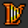
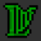
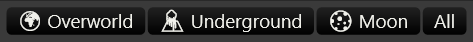
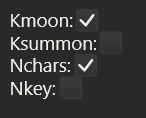

Introduction

Pollendina is an randomizer tracker that runs as a native app on your computer. It is heavily inspired by the amazing EmoTracker
Pollendina is in it's early stages and under HEAVY, ACTIVE DEVELOPMENT!
The user interface is likely to change throughout the alpha releases!
Pollendina's notable features are:
- Supports Windows, MacOS, Linux.
- Supports auto tracking using usb2snes and QUsb2snes
- Dynamic map and objective support.
- Game support is added through an extensible module system.
- Comes bundled with Free Enterprise module.
Planned features:
- Modules for randomizers other than Free Enterprise.
- Developer documentation.
Planned Free Enterprise features:
- Flag string parsing.
- Automatic flag string detection from the auto-tracker.
- Objective support.
Installation
Download
The latest release can always be found on the Releases Page. There are packages for Windows (.msi), Mac (.dmg), and Linux (.deb). Download the appropriate package for your system.
Windows
The Windows package is unsigned. When you run the installer you'll get presented with a Windows protected your PC dialog. Install, click More info then Run anyway.
Mac
The Mac app is unsigned. To run it the first time, right click on the app and select open. You be presented with a dialog saying that the application is unknown. Click Open anyway.
Linux
If your distro supports .deb packages you can install using the following
command:
sudo apt install pollendina-linux-vX.Y.Z.deb
Quick Start
Main Window
The main window is divided into tree sections:
- Action Bar at the top of the window.
- Key Item View at the left of the window.
- Map View at the right of the window.
In addition the main window, there are two additional windows:
Action Bar

The Action Bar is where all the non-game related actions live. Almost no work has been spend on its UI so expect it to change in the future. The actions are:
- Start/Stop auto tracking starts and stops the auto tracker. See the Auto Tracking Chapter for more information.
- Dump dumps application state to the console. This is not useful unless you are running the app from the command line.
- Broadcast View opens the broadcast view window. See the Broadcast View Window section for more information
- Config opens the config window. See the Config Window section for more information.
Key Item View
The Key Item View displays all the key items in the game. Key Items in this view have 3 states. Each state has a distinct appearance.
 Locked: Key item has not been found.
Locked: Key item has not been found.-  Unlocked: Key item has been found.
-  Complete: Key item has used.
Clicking on a key item will change its state from locked, to unlocked, to complete, and back to locked again. If auto tracking is active, it will override key items that are auto tracked.
Map View
The Map View shows all the location in the game on the game's maps. There are multiple map views which can be selected by clicking on one of the buttons:

Each location is represented by a colored circle. The circles color indicates a the availability of checks at that location:
 No checks available. Even if some checks are
complete, the location will be in this state if there are some checks that are
not yet available.
No checks available. Even if some checks are
complete, the location will be in this state if there are some checks that are
not yet available. At least one check is available.
At least one check is available. All checks have been completed.
All checks have been completed. If there are no checks at the locations
because all its checks have been disabled by flags, it will not appear on the
map.
If there are no checks at the locations
because all its checks have been disabled by flags, it will not appear on the
map.
Clicking one of the location circles will bring up the checks pop-up listing all the checks at that location and their states. The checks are color coded using the same scheme described in the Key Item View section. Clicking outside the popup will close it.
Config Window

The config window allows you to set the game flags. Both its UI and features are very basic and will change drastically in the future.
Broadcast Window

The broadcast view is a simplifies view of the game state. It is useful for capturing and adding to your stream overlay to let people know what how your seed is going.
Auto Tracking
Setup
Pollendina needs a usb2snes service for auto tracking. Two programs provide this service:
QUsb2snes is probably a better choice. It's newer, has more features and support more platforms.
The SMZ3r multiworld setup instructions cover getting these programs set up on both SD2SNES(FXPAK) and Emulator.
The following configurations have been tested:
| Windows | Mac | Linux | |
|---|---|---|---|
| SD2SNES(FXPAK) | ✅ | ✅ | ✅ |
| Snes9x-rr-1.55-multitroid2 | ✅ | 🟡 | 🟡 |
| bsnes-mercury-balanced | 🟡 | 🟡 | ✅ |
- ✅ Know working
- 🟡 Untested
- ❌ Know not working
Usage
To use auto-tracking:
- Make sure you have the usb2snes service set up per the above instructions.
- Load an Free Enterprise rom.
- Click the
Start auto trackingbutton.- NOTE!!! Pollendina will only connect to the first usb2snes devices it sees.
- If all goes well you should see the
Idlestatus change toConnected
Credits
Much of the design has been heavily inspired by the amazing EmoTracker
Icons for the Free Enterprise module were created by SchalaKitty